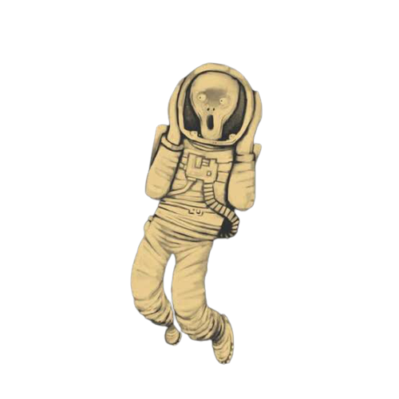
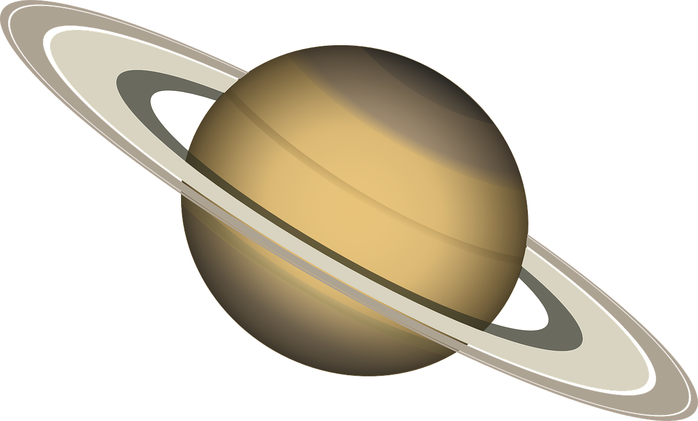

Curiosidades do universo
O universo engloba tudo o que existe fisicamente. É o espaço, o tempo, os planetas, estrelas, galáxias e todas as formas de matéria que vemos no cotidiano, dentro do planeta Terra. A ciência explica, através de uma teoria, que o surgimento do universo se deu devido à uma grande exploxão, o Big Bang, que antes de explodir era um pontinho trilhões de vezes menor que a cabeça de um alfinete. Desde então surgiram os primeiros átomos, e aos poucos, com a ajuda de fenômenos, as primeiras plantas, animais, e hoje em dia, tudo que podemos ver na Terra e fora dela. Até os dias atuais o universo continua se espandindo e resfriando. Mas claro que essa teoria originou várias outras poise, muitas vezes, é assustador pensar que um pontinho se tornou tudo aquilo que conhecemos atualmente (e também aquilo que aindanão conhecemos, e talvez nunca iremos conhecer. Esse espaço enorme e talvez infinito também guarda muitas curiosidades bizarras, interessantes e assustadoras.
Não existe som no espaço pois não existe ar. O espaço é um grande vácuo, e como o som é composto por ondas que se espalham pelo ar, elas não tem como se locomover no espaço.

Ninguém sabe quantas estrelas existem no universo, mas estima-se que sejam 400 bilhões. A Via Láctea é apenas uma das 140 bilhões de galáxias, muitas delas bem maiores que a nossa. Por conta disso, fica quase impossível não cogitar a ideia de haverem outras civilizações por aí, algumas bem mais avançadas que a nossa.

O espaço é escuro porque ele é vazio, desprovido de corpos que emitam ou reflitam a luz. A escuridão é a ausência de luz, por isso o espaço é escuro

De acordo com a teoria geral da relatividade de Einstein, os buracos negros podem dobrar o espaço e atrair tudo ao seu redor, até mesmo a luz. Por causa da atração gravitacional do buraco negro, os objetos que estão perto o suficiente dele se movem muito perto da velocidade da luz.

Referências
Leiturinha
Wikipedia
Revista Galileu
Mundo Educação
Mega Curioso
Todo estudo